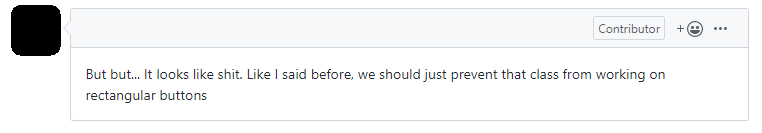

Before you do ANYTHING, gain consensus with your team!
Develop a Team Working Agreement and enforce it!
ü§ñ
Let the robots take over!
(they're better at it anyway)
Prettier and ESLint have saved team relationships!
Objectivity Always Wins
What's Objective?
"This change should probably go into our utils library.
It will be re-used quite a bit!"
"I've run this on several browsers and this toast actually pops up
on the top-right but
our ticket specifies bottom-right! Can we fix it so it matches our requirements?"
"I'm having
trouble keeping up with the logic on lines 457-464. Is there a way we can simplify it or make it clearer?"
"This method is
being deprecated in two weeks! I'd suggest replacing it with the authenticateUser method from our authentication library!"
Subjectivity
Tone of Voice
Process Loopholes
Subjectivity
Tone of Voice
Process Loopholes

From a pull request for the materialize repo
"This implementation is
terrible."
"Didn't we decide
NOT to do this at our last meeting?"
"Why would
you use this when there's
obviously no benefit?"
"Are you really using
lodash, really?"
"This implementation is
terrible."
"Didn't we decide
NOT to do this at our last meeting?"
"Why would
you use this when there's
obviously no benefit?"
"Are you really using
lodash, really?"
...What we can do better?
TL;DR Don't be a jerk!
Suggest with facts
Reject with courtesy
Clarify with an open-mind
Subjectivity
Tone of Voice
Process Loopholes
Subjectivity
Tone of Voice
Process Loopholes
Bias
No Reviews(!)
M.V.E.
Minimum V.E.
Minimum Viable E.
Minimum Viable Effort
...What we can do better?
Establish code review policies
Auto add developers to PRs
Use Code Owners
in GitHub
Enforce the process for EVERYONE
Because even after the PRs are merged, you still have to work with your teammates...